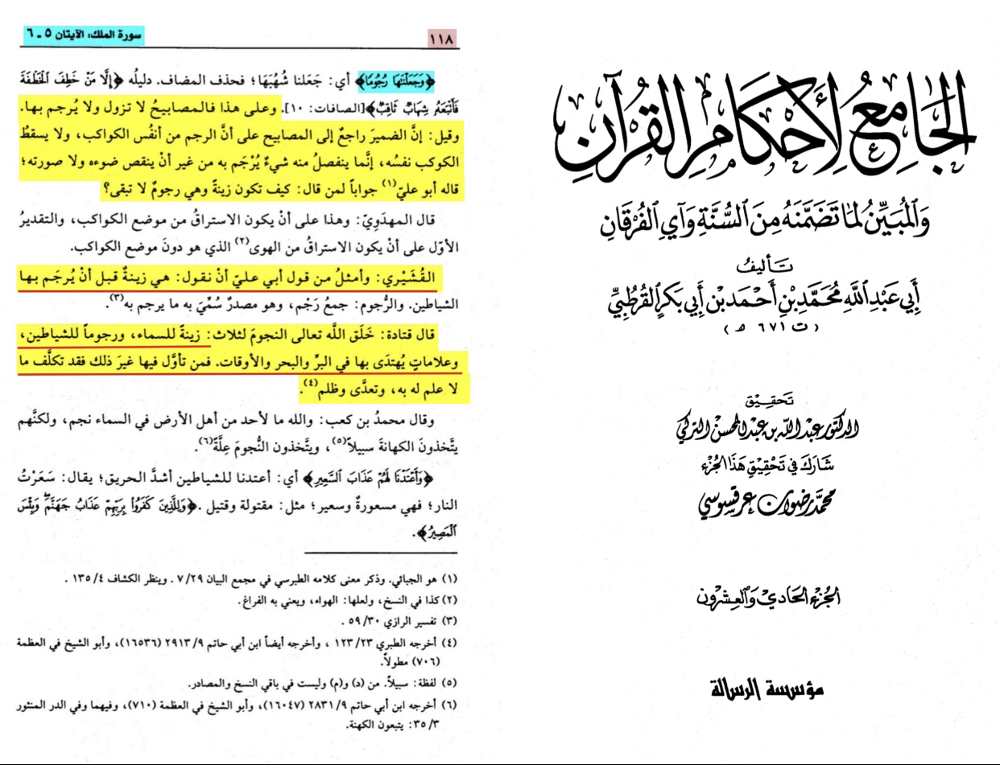

translation: “And on this stars or planets are not stoned with it was said that he damir is going back
to the planets a part of it and not a planet itself Qatadah said Allah created the stars/planets for
3 things first a decoration for the sky stoning to demons and a sign people can you to travel from”
-Source: Al-Jāmī’ li ahkam al-Qūr’ān al-Qurtubi (RH) volume 21 page number 118 interpretation of 67:5

The Qūr’ān just claims it can used for that not it is made for that and you can’t refute it as it is
the matter of the unseen